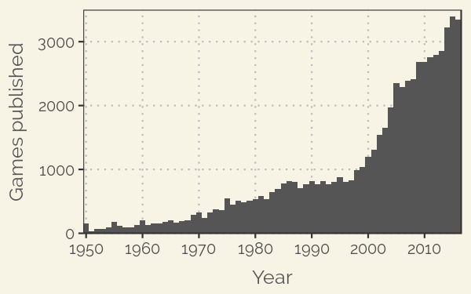
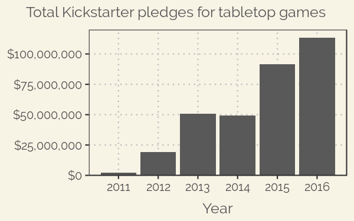

<div class="row static-content" id="intro-content">
  <div class="col-sm-12">
    <h1 id="intro-head">What makes a board game successful in a growing board game market?</h1>
    <p><strong>Tabletop games (e.g. board games and card games) are in the midst of a Golden Age.</strong></p>
    <p>The number of new games being published each year is growing rapidly, with over 3000 published in 2016.</p>
    
    <p>A lot of these games are developed with the support of crowdfunding on platforms like <a href="https://www.kickstarter.com">Kickstarter</a>. Last year saw over <strong>$100 million</strong> in Kickstarter pledges to successful campaigns in the tabletop gaming category.</p>
    
    <p>Success varies wildly, however, and <strong>over 30% of campaigns fail</strong> outright, so data on how to maximize the likelihood of creating a successful game could be useful.</p>
    <p>The data for the first plot above come from the website <a href="https://www.boardgamegeek.com">BoardGameGeek</a>, the largest online community dedicated to tabletop gaming. BoardGameGeek has <strong>a large database of games</strong> that includes user ratings, attributes such as average playing time, and tags for categories and game mechanics.</p>
    <p>We can combine the data from BoardGameGeek's database with <strong>information scraped from Kickstarter</strong> in order to identify the features that lead to critical and financial success.</p>
    <p>You can either <a id="goto_report" href="#" class="action-button shiny-bound-input">read the full report</a> or explore the results for:
      <ul>
	<li><a id="goto_ratings" href="#" class="action-button shiny-bound-input">BoardGameGeek user ratings</a></li>
	<li><a id="goto_pledges" href="#" class="action-button shiny-bound-input">Kickstarter pledge totals</a></li>
	<li><a id="goto_success" href="#" class="action-button shiny-bound-input">Kickstarter campaign success or failure</a></li>
      </ul>
    </p>
  </div>
</div>
